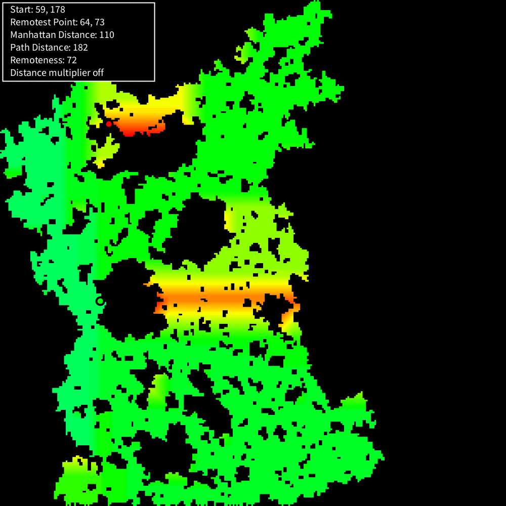
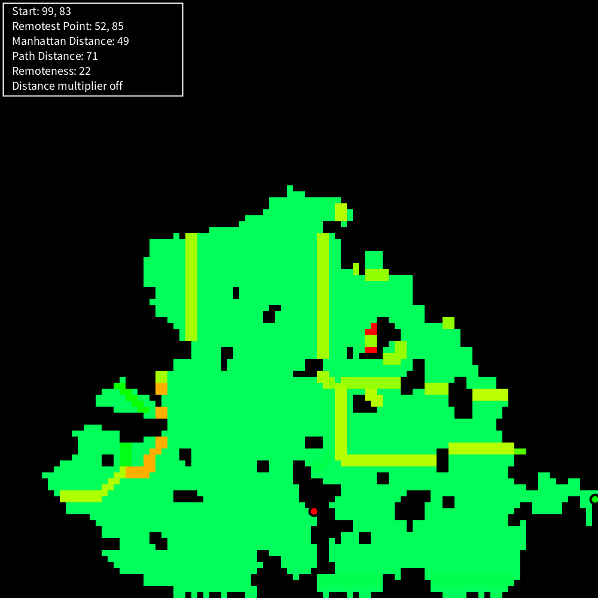

An algorithm to find remote locations on a map. Can also be used to subdivide the map I devloped a simple algorithm to find remote locations on a map based on a starting location. The basic idea is to assign each spot on the map a value based on the difference of the length of the actual path to it and the distance 'as the crow flies'. It can easily be expanded to take into account different terrain types. After this calculation is carried out, it is left up to the developer what to do with this information. Once can easily imagine placing extra tresures there, if one wants to reward players who love to explore every inch of a given map.
Dijkstra - Manhatten
A sort of derivative of the previous algorithm